Collected Points
[1] “Theoretical maximum:” [1] 36000 [1] “Empirical maximum:” [1] 25628Score distribution by condition
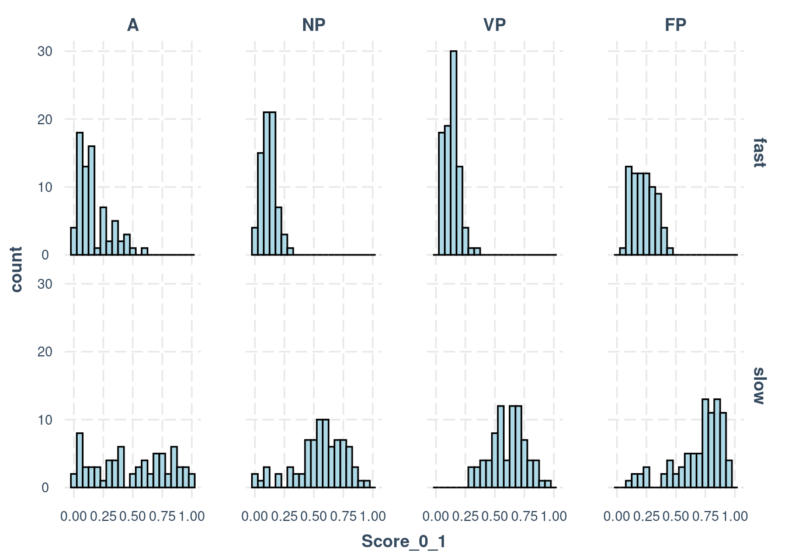
Model 1
m.CollectedPoints.1.formula <- brmsformula(
Score_0_1 ~ 1 + ResourceSpeed * SignalingType + IsInFullGroup + (1 | Group),
family = Beta(link = "logit", link_phi = "log")
)
m.CollectedPoints.1.formula_comparison <- brmsformula(
Score_0_1 ~ 1 + ResourceSpeed * SignalingType + IsInFullGroup
)
m.CollectedPoints.1.priors <-
prior(normal(0, 0.5), class = b) +
prior(normal(0, 1), class = Intercept) +
prior(normal(2, 1), class = phi, lb = 0) +
prior(normal(0, 1), class = sd, lb = 0)Prior predictive checks
m.CollectedPoints.1.fit_prior <- brm(
formula = m.CollectedPoints.1.formula,
data = m.CollectedPoints.data,
prior = m.CollectedPoints.1.priors,
chains = 4,
cores = 4,
seed = 42,
iter = 2000,
file = paste0(fits_path, 'collected_points_1_prior.rds'),
sample_prior = "only",
backend = "cmdstanr",
threads = threading(100),
control = list(adapt_delta = 0.95),
save_pars = save_pars(all = TRUE))
m.CollectedPoints.1.y <- m.CollectedPoints.data$Score_0_1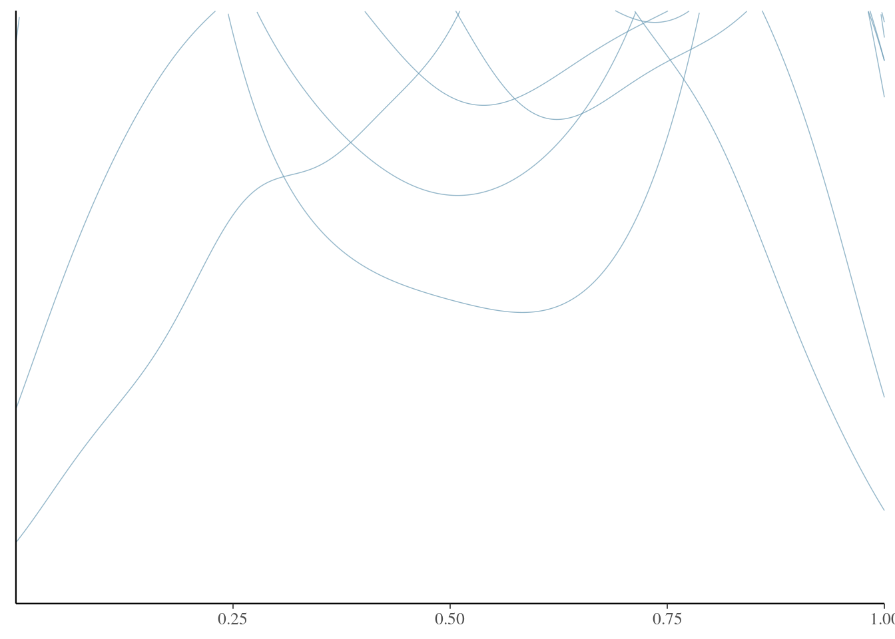
## Family: beta
## Links: mu = logit; phi = identity
## Formula: Score_0_1 ~ 1 + ResourceSpeed * SignalingType + IsInFullGroup + (1 | Group)
## Data: m.CollectedPoints.data (Number of observations: 621)
## Draws: 4 chains, each with iter = 2000; warmup = 1000; thin = 1;
## total post-warmup draws = 4000
##
## Multilevel Hyperparameters:
## ~Group (Number of levels: 247)
## Estimate Est.Error l-95% CI u-95% CI Rhat Bulk_ESS Tail_ESS
## sd(Intercept) 0.80 0.60 0.04 2.21 1.00 3506 1605
##
## Regression Coefficients:
## Estimate Est.Error l-95% CI u-95% CI Rhat Bulk_ESS Tail_ESS
## Intercept -0.02 1.12 -2.24 2.17 1.00 5550 2969
## ResourceSpeedslow 0.01 0.49 -0.96 0.99 1.00 5197 3111
## SignalingTypeNP -0.01 0.50 -0.98 0.94 1.00 4846 2788
## SignalingTypeVP 0.00 0.50 -0.99 0.96 1.00 5443 2929
## SignalingTypeFP -0.01 0.49 -0.98 0.93 1.00 4785 2505
## IsInFullGroup 0.01 0.50 -0.95 0.99 1.00 4500 2755
## ResourceSpeedslow:SignalingTypeNP 0.01 0.49 -0.95 0.96 1.00 5243 3075
## ResourceSpeedslow:SignalingTypeVP -0.01 0.49 -0.97 0.93 1.00 4948 2982
## ResourceSpeedslow:SignalingTypeFP -0.00 0.50 -0.97 0.96 1.00 4573 2577
##
## Further Distributional Parameters:
## Estimate Est.Error l-95% CI u-95% CI Rhat Bulk_ESS Tail_ESS
## phi 2.08 0.91 0.38 3.89 1.00 2763 1245
##
## Draws were sampled using sample(hmc). For each parameter, Bulk_ESS
## and Tail_ESS are effective sample size measures, and Rhat is the potential
## scale reduction factor on split chains (at convergence, Rhat = 1).Model fitting
m.CollectedPoints.1.fit <- brm(
formula = m.CollectedPoints.1.formula,
data = m.CollectedPoints.data,
prior = m.CollectedPoints.1.priors,
chains = 7,
cores = 7,
seed = 42,
iter = 20000,
file = paste0(fits_path, 'collected_points_1.rds'),
backend = "cmdstanr",
threads = threading(100),
control = list(adapt_delta = 0.95),
save_pars = save_pars(all = TRUE)
)## Family: beta
## Links: mu = logit; phi = identity
## Formula: Score_0_1 ~ 1 + ResourceSpeed * SignalingType + IsInFullGroup + (1 | Group)
## Data: m.CollectedPoints.data (Number of observations: 621)
## Draws: 7 chains, each with iter = 20000; warmup = 10000; thin = 1;
## total post-warmup draws = 70000
##
## Multilevel Hyperparameters:
## ~Group (Number of levels: 247)
## Estimate Est.Error l-95% CI u-95% CI Rhat Bulk_ESS Tail_ESS
## sd(Intercept) 0.81 0.06 0.70 0.93 1.00 20145 36668
##
## Regression Coefficients:
## Estimate Est.Error l-95% CI u-95% CI Rhat Bulk_ESS Tail_ESS
## Intercept -1.76 0.20 -2.14 -1.37 1.00 18769 33787
## ResourceSpeedslow 1.57 0.15 1.29 1.86 1.00 28686 42990
## SignalingTypeNP -0.11 0.21 -0.54 0.31 1.00 19824 34300
## SignalingTypeVP 0.04 0.21 -0.37 0.45 1.00 19077 33491
## SignalingTypeFP 0.49 0.22 0.06 0.92 1.00 18595 32490
## IsInFullGroup 0.13 0.17 -0.20 0.47 1.00 15739 29444
## ResourceSpeedslow:SignalingTypeNP 0.35 0.28 -0.19 0.89 1.00 19230 33784
## ResourceSpeedslow:SignalingTypeVP 0.45 0.27 -0.08 0.97 1.00 19105 33209
## ResourceSpeedslow:SignalingTypeFP 0.38 0.27 -0.15 0.92 1.00 19035 32155
##
## Further Distributional Parameters:
## Estimate Est.Error l-95% CI u-95% CI Rhat Bulk_ESS Tail_ESS
## phi 10.30 0.60 9.14 11.52 1.00 44026 51621
##
## Draws were sampled using sample(hmc). For each parameter, Bulk_ESS
## and Tail_ESS are effective sample size measures, and Rhat is the potential
## scale reduction factor on split chains (at convergence, Rhat = 1).Model diagnostics
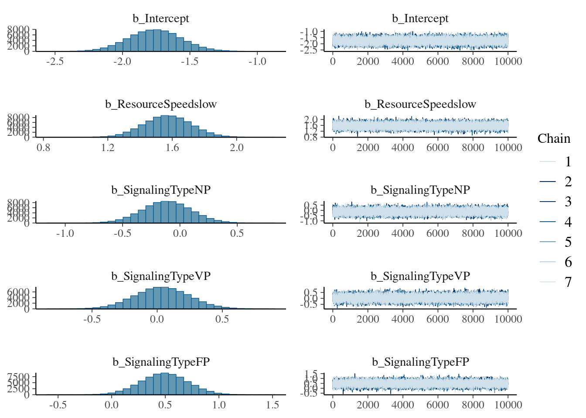
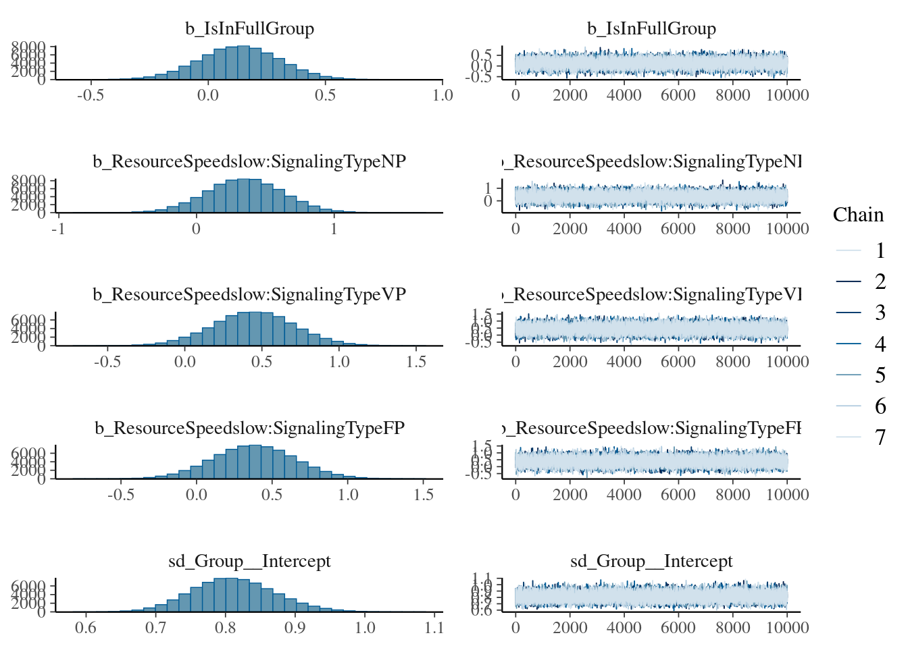
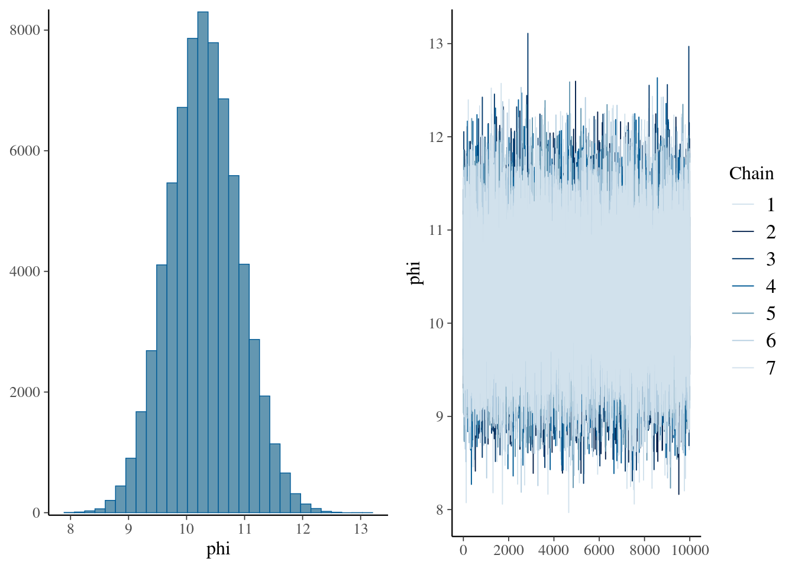
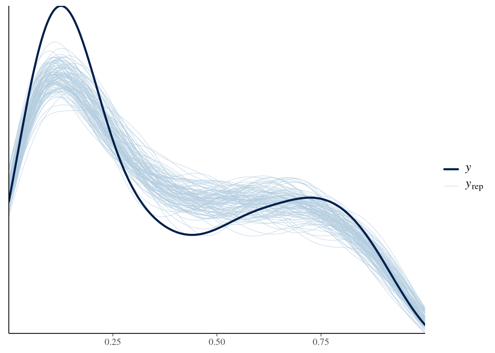
ppc_dens_overlay_grouped(m.CollectedPoints.1.y, m.CollectedPoints.1.yrep[1:100, ],
group = m.CollectedPoints.data$ResourceSpeed)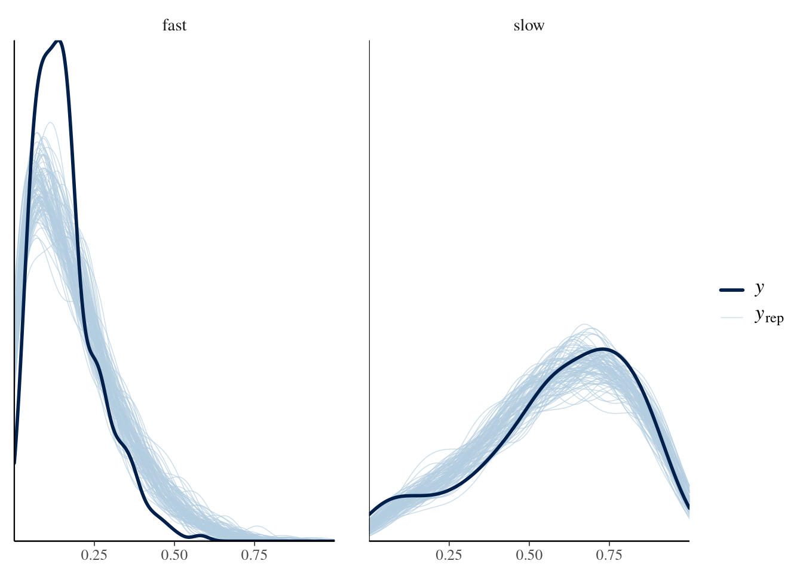
ppc_dens_overlay_grouped(m.CollectedPoints.1.y,m.CollectedPoints.1.yrep[1:100, ],
group = m.CollectedPoints.data$SignalingType)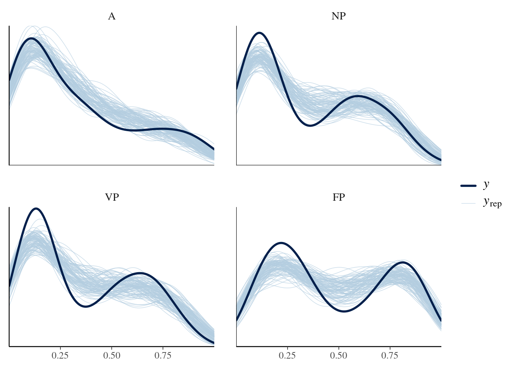
group <- m.CollectedPoints.data$SignalingType
mask <- m.CollectedPoints.data$ResourceSpeed == 'fast'
ppc_dens_overlay_grouped(m.CollectedPoints.1.y[mask],
m.CollectedPoints.1.yrep[1:50, mask],
group = group[mask])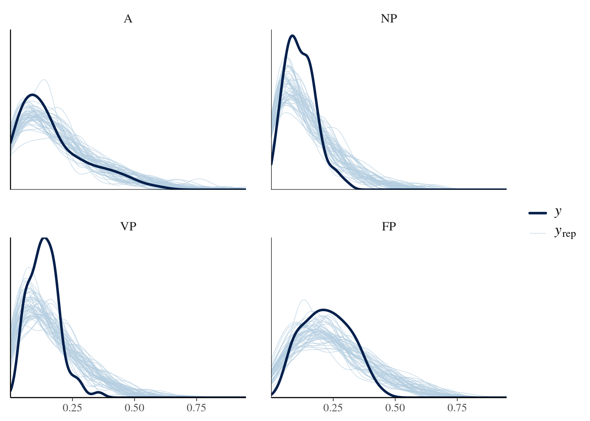
group <- m.CollectedPoints.data$SignalingType
mask <- m.CollectedPoints.data$ResourceSpeed == 'slow'
ppc_dens_overlay_grouped(m.CollectedPoints.1.y[mask],
m.CollectedPoints.1.yrep[1:50, mask],
group = group[mask])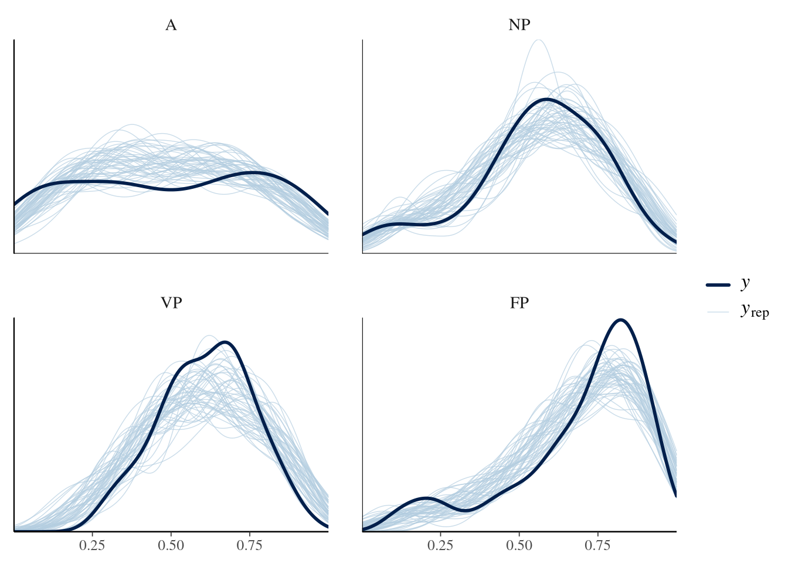
Condition comparisons
m.CollectedPoints.1.emmeans_contrast_draws.1 <- m.CollectedPoints.1.fit %>%
emmeans(~ ResourceSpeed,
epred = TRUE,
re_formula = m.CollectedPoints.1.formula_comparison,
type = "response",
) %>%
contrast(method = "revpairwise", simple = "each", combine = TRUE) %>%
gather_emmeans_draws() %>%
mutate(.value = .value * empirical_max)m.CollectedPoints.1.comparison.1 <- m.CollectedPoints.1.emmeans_contrast_draws.1 %>%
ggdist::mean_hdci(.width = 0.9) %>%
mutate(.value = round(.value, 2), .lower = round(.lower, 2), .upper = round(.upper, 2))
m.CollectedPoints.1.comparison.1 %>%
knitr::kable("html", digits = 2) %>% kable_classic(full_width = T, position = "center", )| contrast | .value | .lower | .upper | .width | .point | .interval |
|---|---|---|---|---|---|---|
| slow - fast | 10046.02 | 8928.36 | 11157.59 | 0.9 | mean | hdci |
m.CollectedPoints.1.emmeans_contrast_draws.1 %>%
rename(prediction = .value) %>%
ggplot(aes(y = contrast, x = prediction)) +
stat_pointinterval(.width = 0.9) +
geom_vline(aes(xintercept=0), linetype="longdash") +
theme_nice()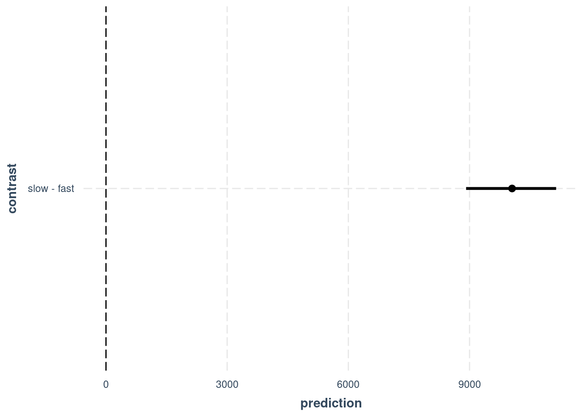
m.CollectedPoints.1.emmeans_contrast_draws.2 <- m.CollectedPoints.1.fit %>%
emmeans(~ SignalingType * ResourceSpeed,
epred = TRUE,
type = "response",
re_formula = m.CollectedPoints.1.formula_comparison
) %>%
contrast(method = "revpairwise", simple = "each", combine = TRUE) %>%
gather_emmeans_draws() %>%
mutate(.value = .value * empirical_max)| ResourceSpeed | SignalingType | contrast | .value | .lower | .upper | .width | .point | .interval |
|---|---|---|---|---|---|---|---|---|
| . | A | slow - fast | 8023.29 | 6673.11 | 9330.67 | 0.9 | mean | hdci |
| . | FP | slow - fast | 11379.82 | 9233.70 | 13545.33 | 0.9 | mean | hdci |
| . | NP | slow - fast | 9862.00 | 7702.52 | 12020.20 | 0.9 | mean | hdci |
| . | VP | slow - fast | 10918.96 | 8798.30 | 13053.67 | 0.9 | mean | hdci |
| fast | . | FP - A | 1964.19 | 420.95 | 3458.98 | 0.9 | mean | hdci |
| fast | . | FP - NP | 2308.73 | 539.63 | 4011.35 | 0.9 | mean | hdci |
| fast | . | FP - VP | 1817.67 | 50.50 | 3509.43 | 0.9 | mean | hdci |
| fast | . | NP - A | -344.54 | -1476.70 | 773.02 | 0.9 | mean | hdci |
| fast | . | VP - A | 146.53 | -1034.41 | 1320.03 | 0.9 | mean | hdci |
| fast | . | VP - NP | 491.07 | -955.07 | 1943.32 | 0.9 | mean | hdci |
| slow | . | FP - A | 5320.73 | 3197.98 | 7406.33 | 0.9 | mean | hdci |
| slow | . | FP - NP | 3826.55 | 1193.00 | 6499.61 | 0.9 | mean | hdci |
| slow | . | FP - VP | 2278.53 | -369.19 | 4904.94 | 0.9 | mean | hdci |
| slow | . | NP - A | 1494.17 | -792.99 | 3875.89 | 0.9 | mean | hdci |
| slow | . | VP - A | 3042.20 | 746.87 | 5361.71 | 0.9 | mean | hdci |
| slow | . | VP - NP | 1548.03 | -1348.43 | 4345.81 | 0.9 | mean | hdci |
m.CollectedPoints.1.emmeans_contrast_draws.2 %>%
filter(ResourceSpeed != '.') %>%
rename(prediction = .value) %>%
ggplot(
aes(y = contrast,
x = prediction,
color = ResourceSpeed, shape = ResourceSpeed, fill = ResourceSpeed)) +
facet_grid(rows = vars(ResourceSpeed)) +
stat_pointinterval(.width = 0.9) +
scale_color_manual(values = get_colors("Qual2", num.colors = 2, reverse = TRUE, gradient = FALSE)) +
scale_fill_manual(values = get_colors("Qual2", num.colors = 2, reverse = TRUE, gradient = FALSE)) +
scale_shape_manual(values = c(21, 24)) +
geom_vline(aes(xintercept=0), linetype="longdash") +
theme_nice()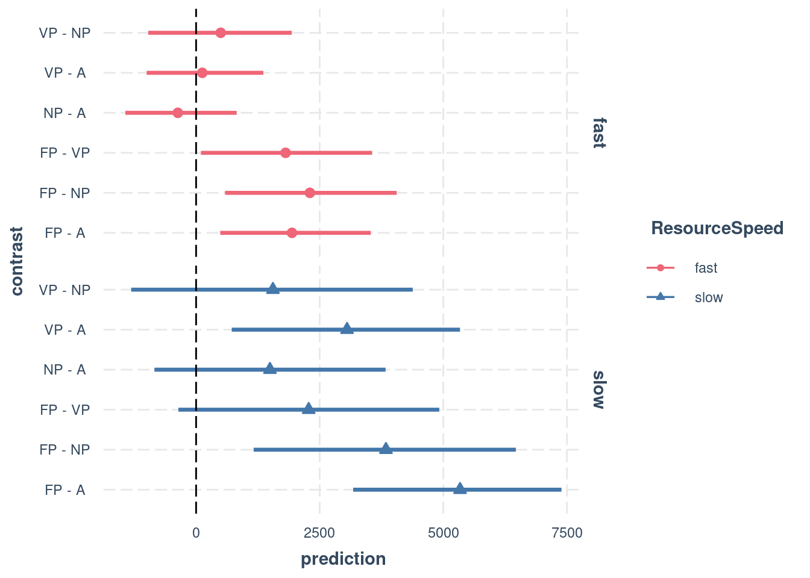
m.CollectedPoints.1.comparison.combined_table <- bind_rows(
m.CollectedPoints.1.comparison.1,
m.CollectedPoints.1.comparison.2
) %>%
select(ResourceSpeed, SignalingType, contrast, .value, .lower, .upper) %>%
mutate(
ResourceSpeed = ifelse(is.na(ResourceSpeed), ".", as.character(ResourceSpeed)),
SignalingType = ifelse(is.na(SignalingType), ".", as.character(SignalingType)),
sig = (.lower * .upper) > 0,
Estimate = sprintf("%.2f", .value),
Estimate = ifelse(sig, paste0("\\textbf{", Estimate, "}"), Estimate),
hpdi = sprintf("[%.2f, %.2f]", .lower, .upper),
hpdi = ifelse(sig, paste0("\\textbf{", hpdi, "}"), hpdi)
) %>%
select(ResourceSpeed, SignalingType, contrast, Estimate, hpdi)
# (Optional) Rename columns for publication
colnames(m.CollectedPoints.1.comparison.combined_table) <- c(
"Resource Speed", "Signaling Type", "Contrast", "Mean", "90\\% HPDI"
)
kbl <- kable(
m.CollectedPoints.1.comparison.combined_table,
format = "latex",
booktabs = TRUE,
align = c("l", "l", "l", "r", "r"),
caption = "Posterior Estimates Collected Points",
escape = FALSE
) %>%
kable_styling(latex_options = "hold_position") %>%
row_spec(0, bold = TRUE)
unique_speeds <- unique(m.CollectedPoints.1.comparison.combined_table$`Resource Speed`)
start <- 1
for (speed in unique_speeds) {
n_rows <- sum(m.CollectedPoints.1.comparison.combined_table$`Resource Speed` == speed)
if (speed != ".") {
kbl <- group_rows(kbl, speed, start, start + n_rows - 1)
}
start <- start + n_rows
}
writeLines(kbl, paste0(comparisons, "collected_points_comparison_combined.tex"))Model 2
m.CollectedPoints.2.formula <- brmsformula(
Score_0_1 ~ 1 + ResourceSpeed * SignalingType + IsInFullGroup + (1 | Group),
phi ~ ResourceSpeed * SignalingType,
family = Beta(link = "logit", link_phi = "log")
)
m.CollectedPoints.2.formula_comparison <- brmsformula(
Score_0_1 ~ 1 + ResourceSpeed * SignalingType + IsInFullGroup,
phi ~ ResourceSpeed * SignalingType
)
m.CollectedPoints.2.priors <-
prior(normal(0, 0.5), class = b) +
prior(normal(0, 1), class = Intercept) +
prior(gamma(4, 0.1), class = Intercept, dpar = phi, lb = 0) +
prior(normal(0, 1), class = b, dpar = phi) +
prior(normal(0, 1), class = sd, lb = 0)Prior predictive checks
m.CollectedPoints.2.fit_prior <- brm(
formula = m.CollectedPoints.2.formula,
data = m.CollectedPoints.data,
prior = m.CollectedPoints.2.priors,
chains = 4,
cores = 4,
seed = 42,
iter = 2000,
file = paste0(fits_path, 'collected_points_2_prior.rds'),
backend = "cmdstanr",
threads = threading(100),
control = list(adapt_delta = 0.95),
save_pars = save_pars(all = TRUE),
sample_prior = "only")
m.CollectedPoints.2.y <- m.CollectedPoints.data$Score_0_1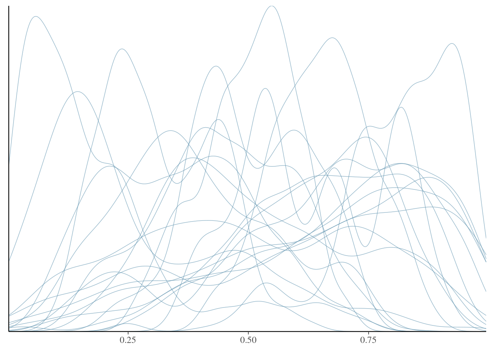
## Family: beta
## Links: mu = logit; phi = log
## Formula: Score_0_1 ~ 1 + ResourceSpeed * SignalingType + IsInFullGroup + (1 | Group)
## phi ~ ResourceSpeed * SignalingType
## Data: m.CollectedPoints.data (Number of observations: 621)
## Draws: 4 chains, each with iter = 2000; warmup = 1000; thin = 1;
## total post-warmup draws = 4000
##
## Multilevel Hyperparameters:
## ~Group (Number of levels: 247)
## Estimate Est.Error l-95% CI u-95% CI Rhat Bulk_ESS Tail_ESS
## sd(Intercept) 0.79 0.58 0.03 2.20 1.00 3094 1725
##
## Regression Coefficients:
## Estimate Est.Error l-95% CI u-95% CI Rhat Bulk_ESS Tail_ESS
## Intercept 0.02 1.13 -2.19 2.18 1.00 7246 2991
## phi_Intercept 40.06 20.00 10.85 87.83 1.00 6203 2554
## ResourceSpeedslow -0.01 0.51 -0.99 1.00 1.00 8165 3175
## SignalingTypeNP -0.00 0.49 -0.95 0.95 1.00 6312 2991
## SignalingTypeVP -0.01 0.49 -0.95 0.92 1.00 5976 3209
## SignalingTypeFP 0.00 0.50 -0.98 0.98 1.00 7185 3280
## IsInFullGroup 0.01 0.49 -0.99 0.95 1.00 6286 3039
## ResourceSpeedslow:SignalingTypeNP 0.00 0.49 -0.95 0.96 1.00 6099 3121
## ResourceSpeedslow:SignalingTypeVP 0.01 0.52 -0.99 1.01 1.00 5793 2854
## ResourceSpeedslow:SignalingTypeFP 0.01 0.51 -1.00 1.00 1.00 6608 3242
## phi_ResourceSpeedslow -0.01 1.04 -2.02 2.08 1.00 7024 2989
## phi_SignalingTypeNP 0.01 1.00 -2.01 1.99 1.00 6608 2911
## phi_SignalingTypeVP -0.03 0.98 -1.96 1.90 1.00 5759 2870
## phi_SignalingTypeFP 0.01 1.00 -1.87 2.02 1.00 7221 2832
## phi_ResourceSpeedslow:SignalingTypeNP -0.01 1.01 -2.02 1.97 1.00 7275 2883
## phi_ResourceSpeedslow:SignalingTypeVP -0.01 0.98 -1.96 1.93 1.00 7152 2811
## phi_ResourceSpeedslow:SignalingTypeFP 0.00 1.00 -1.92 1.95 1.00 7047 3125
##
## Draws were sampled using sample(hmc). For each parameter, Bulk_ESS
## and Tail_ESS are effective sample size measures, and Rhat is the potential
## scale reduction factor on split chains (at convergence, Rhat = 1).Model fitting
m.CollectedPoints.2.fit <- brm(
formula = m.CollectedPoints.2.formula,
data = m.CollectedPoints.data,
prior = m.CollectedPoints.2.priors,
chains = 7,
cores = 7,
seed = 42,
iter = 20000,
file = paste0(fits_path, 'collected_points_2.rds'),
backend = "cmdstanr",
threads = threading(100),
control = list(adapt_delta = 0.95),
save_pars = save_pars(all = TRUE)
)## Family: beta
## Links: mu = logit; phi = log
## Formula: Score_0_1 ~ 1 + ResourceSpeed * SignalingType + IsInFullGroup + (1 | Group)
## phi ~ ResourceSpeed * SignalingType
## Data: m.CollectedPoints.data (Number of observations: 621)
## Draws: 7 chains, each with iter = 20000; warmup = 10000; thin = 1;
## total post-warmup draws = 70000
##
## Multilevel Hyperparameters:
## ~Group (Number of levels: 247)
## Estimate Est.Error l-95% CI u-95% CI Rhat Bulk_ESS Tail_ESS
## sd(Intercept) 0.58 0.05 0.48 0.70 1.00 10131 18475
##
## Regression Coefficients:
## Estimate Est.Error l-95% CI u-95% CI Rhat Bulk_ESS Tail_ESS
## Intercept -1.81 0.16 -2.12 -1.51 1.00 17070 31337
## phi_Intercept 2.68 0.25 2.22 3.22 1.00 9698 12035
## ResourceSpeedslow 1.66 0.15 1.37 1.95 1.00 34938 42547
## SignalingTypeNP -0.29 0.17 -0.62 0.06 1.00 15861 26300
## SignalingTypeVP -0.10 0.17 -0.42 0.23 1.00 15174 27652
## SignalingTypeFP 0.45 0.17 0.11 0.79 1.00 12693 25145
## IsInFullGroup 0.13 0.13 -0.12 0.38 1.00 14864 26517
## ResourceSpeedslow:SignalingTypeNP 0.49 0.24 0.02 0.96 1.00 20472 31930
## ResourceSpeedslow:SignalingTypeVP 0.60 0.23 0.15 1.04 1.00 16562 29252
## ResourceSpeedslow:SignalingTypeFP 0.41 0.23 -0.05 0.86 1.00 18119 31814
## phi_ResourceSpeedslow -1.83 0.26 -2.36 -1.33 1.00 13568 18079
## phi_SignalingTypeNP 1.16 0.30 0.55 1.72 1.00 12708 17757
## phi_SignalingTypeVP 1.16 0.29 0.57 1.70 1.00 12291 16317
## phi_SignalingTypeFP 1.47 0.30 0.86 2.03 1.00 13325 18076
## phi_ResourceSpeedslow:SignalingTypeNP 0.03 0.35 -0.64 0.72 1.00 18293 28298
## phi_ResourceSpeedslow:SignalingTypeVP 1.35 0.34 0.69 2.02 1.00 18344 26362
## phi_ResourceSpeedslow:SignalingTypeFP 0.06 0.35 -0.62 0.75 1.00 18829 27450
##
## Draws were sampled using sample(hmc). For each parameter, Bulk_ESS
## and Tail_ESS are effective sample size measures, and Rhat is the potential
## scale reduction factor on split chains (at convergence, Rhat = 1).Model diagnostics
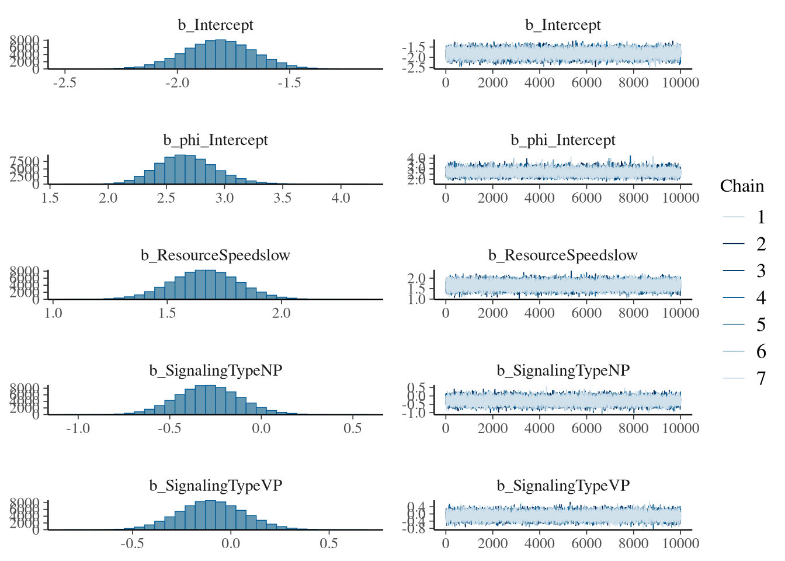
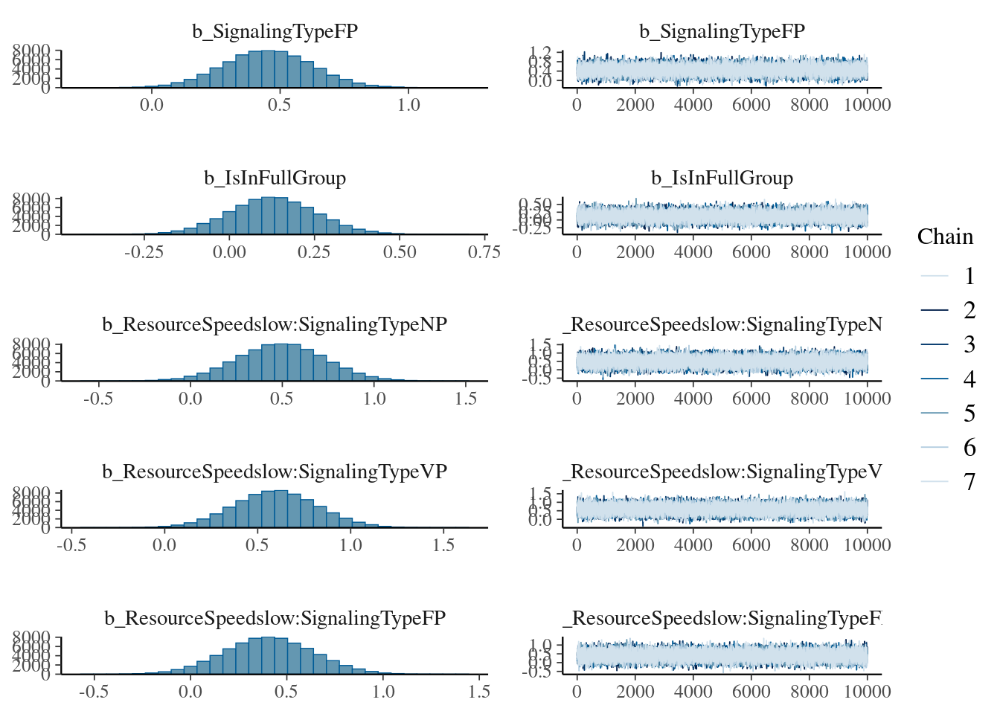
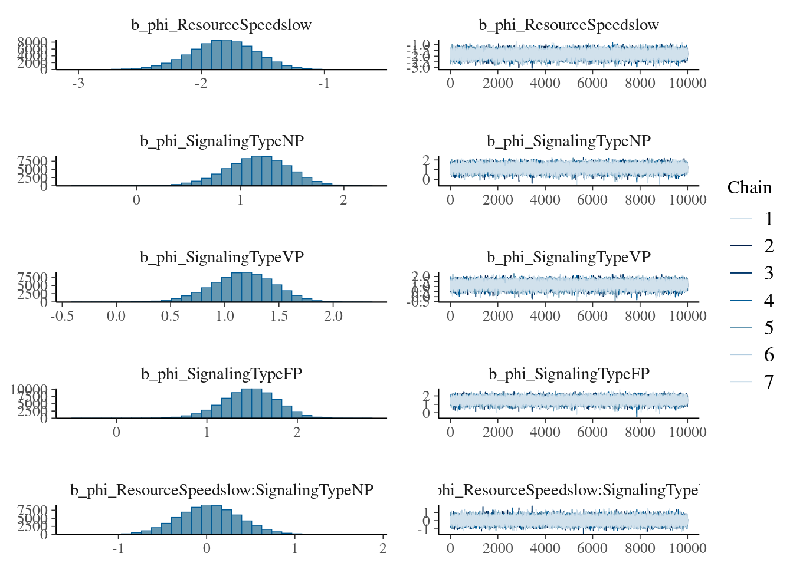
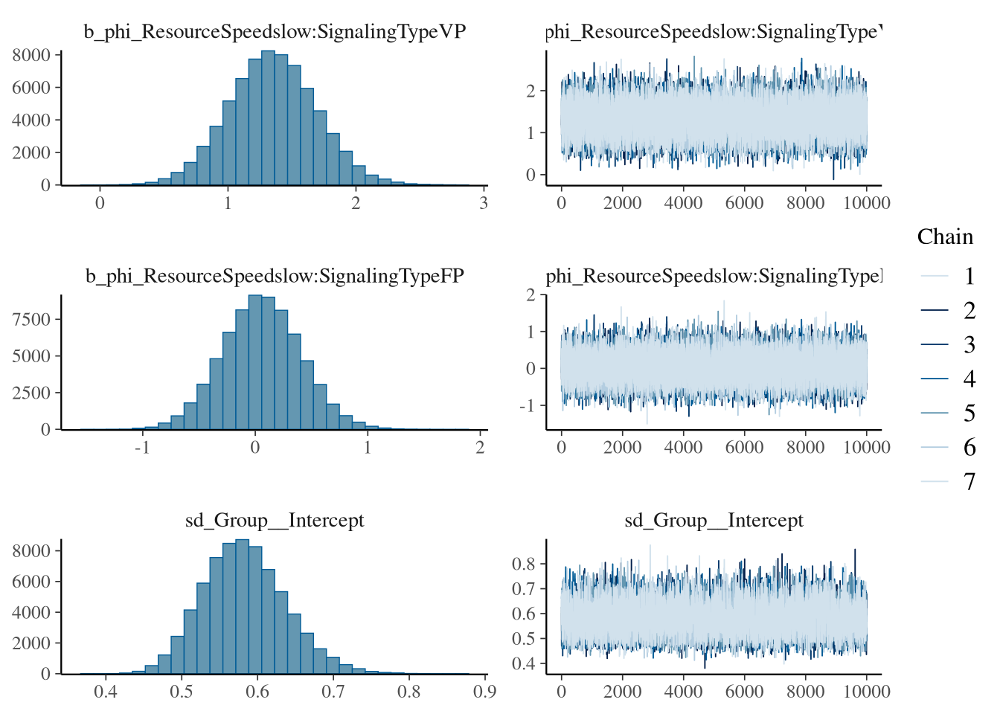
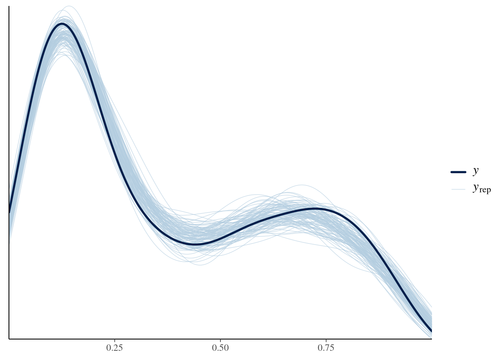
ppc_dens_overlay_grouped(m.CollectedPoints.2.y, m.CollectedPoints.2.yrep[1:100, ],
group = m.CollectedPoints.data$ResourceSpeed)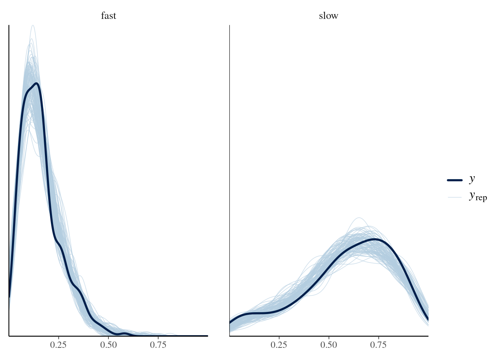
ppc_dens_overlay_grouped(m.CollectedPoints.2.y,m.CollectedPoints.2.yrep[1:100, ],
group = m.CollectedPoints.data$SignalingType)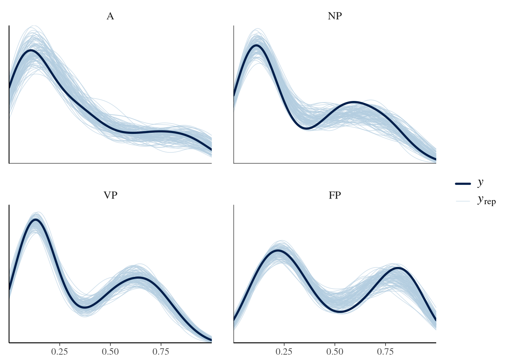
group <- m.CollectedPoints.data$SignalingType
mask <- m.CollectedPoints.data$ResourceSpeed == 'fast'
ppc_dens_overlay_grouped(m.CollectedPoints.2.y[mask],
m.CollectedPoints.2.yrep[1:50, mask],
group = group[mask])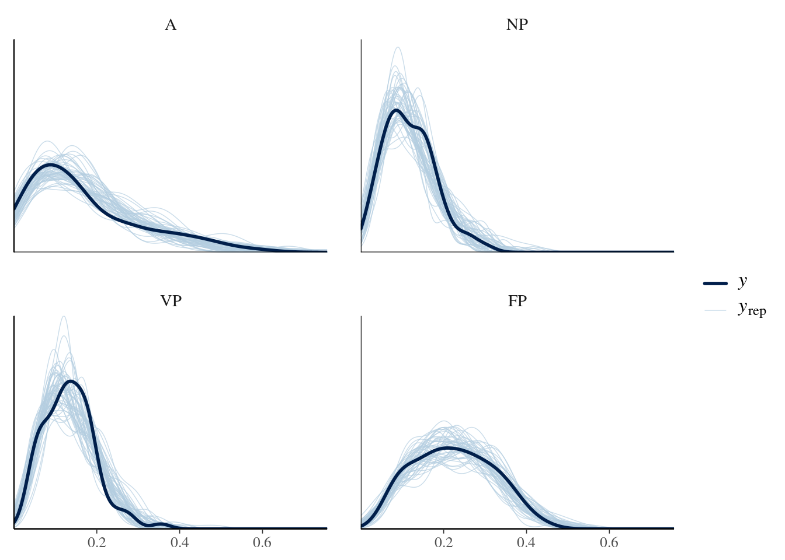
group <- m.CollectedPoints.data$SignalingType
mask <- m.CollectedPoints.data$ResourceSpeed == 'slow'
ppc_dens_overlay_grouped(m.CollectedPoints.2.y[mask],
m.CollectedPoints.2.yrep[1:50, mask],
group = group[mask])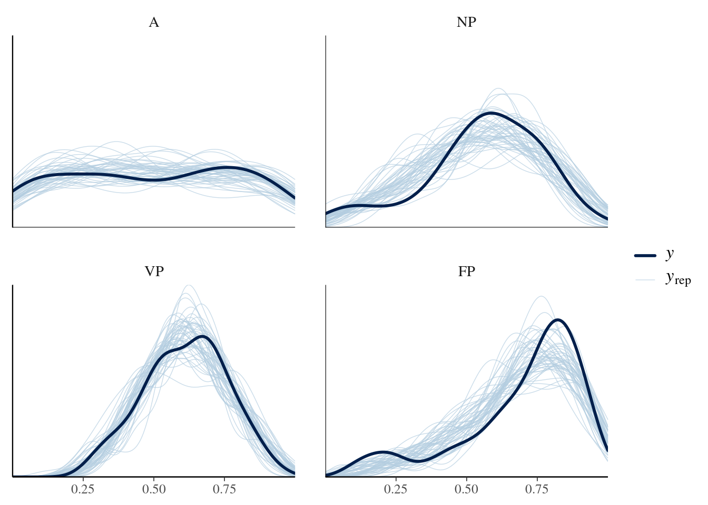
Condition comparisons
m.CollectedPoints.2.emmeans_contrast_draws.1 <- m.CollectedPoints.2.fit %>%
emmeans(~ ResourceSpeed,
epred = TRUE,
re_formula = m.CollectedPoints.2.formula_comparison,
type = "response",
) %>%
contrast(method = "revpairwise", simple = "each", combine = TRUE) %>%
gather_emmeans_draws() %>%
mutate(.value = .value * empirical_max)m.CollectedPoints.2.comparison.1 <- m.CollectedPoints.2.emmeans_contrast_draws.1 %>%
ggdist::mean_hdci(.width = 0.9) %>%
mutate(.value = round(.value, 2), .lower = round(.lower, 2), .upper = round(.upper, 2))
m.CollectedPoints.2.comparison.1 %>%
knitr::kable("html", digits = 2) %>% kable_classic(full_width = T, position = "center", )| contrast | .value | .lower | .upper | .width | .point | .interval |
|---|---|---|---|---|---|---|
| slow - fast | 10720.57 | 9832.1 | 11606.53 | 0.9 | mean | hdci |
m.CollectedPoints.2.emmeans_contrast_draws.1 %>%
rename(prediction = .value) %>%
ggplot(aes(y = contrast, x = prediction)) +
stat_pointinterval(.width = 0.9) +
geom_vline(aes(xintercept=0), linetype="longdash") +
theme_nice()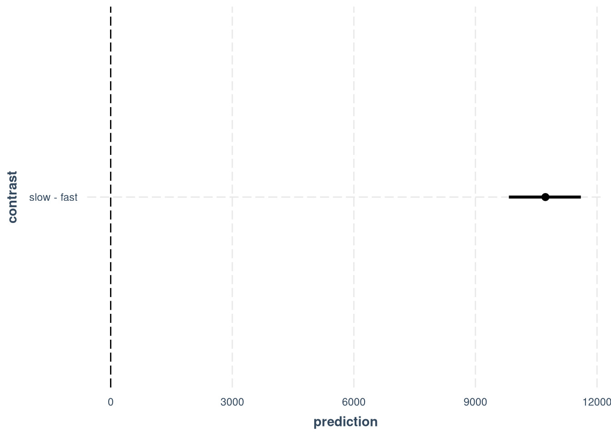
m.CollectedPoints.2.emmeans_contrast_draws.2 <- m.CollectedPoints.2.fit %>%
emmeans(~ SignalingType * ResourceSpeed,
epred = TRUE,
type = "response",
re_formula = m.CollectedPoints.2.formula_comparison
) %>%
contrast(method = "revpairwise", simple = "each", combine = TRUE) %>%
gather_emmeans_draws() %>%
mutate(.value = .value * empirical_max)| ResourceSpeed | SignalingType | contrast | .value | .lower | .upper | .width | .point | .interval |
|---|---|---|---|---|---|---|---|---|
| . | A | slow - fast | 8449.69 | 7053.20 | 9863.92 | 0.9 | mean | hdci |
| . | FP | slow - fast | 11975.64 | 10337.88 | 13668.39 | 0.9 | mean | hdci |
| . | NP | slow - fast | 10571.08 | 8863.52 | 12276.49 | 0.9 | mean | hdci |
| . | VP | slow - fast | 11885.87 | 10325.95 | 13444.91 | 0.9 | mean | hdci |
| fast | . | FP - A | 1710.26 | 572.81 | 2803.50 | 0.9 | mean | hdci |
| fast | . | FP - NP | 2544.92 | 1364.50 | 3718.67 | 0.9 | mean | hdci |
| fast | . | FP - VP | 2008.92 | 843.34 | 3194.27 | 0.9 | mean | hdci |
| fast | . | NP - A | -834.66 | -1654.19 | -35.59 | 0.9 | mean | hdci |
| fast | . | VP - A | -298.66 | -1169.61 | 537.86 | 0.9 | mean | hdci |
| fast | . | VP - NP | 536.00 | -385.41 | 1471.24 | 0.9 | mean | hdci |
| slow | . | FP - A | 5236.22 | 3373.83 | 7129.94 | 0.9 | mean | hdci |
| slow | . | FP - NP | 3949.48 | 1876.26 | 6081.79 | 0.9 | mean | hdci |
| slow | . | FP - VP | 2098.69 | 84.14 | 4069.94 | 0.9 | mean | hdci |
| slow | . | NP - A | 1286.73 | -790.97 | 3366.14 | 0.9 | mean | hdci |
| slow | . | VP - A | 3137.53 | 1126.32 | 5079.08 | 0.9 | mean | hdci |
| slow | . | VP - NP | 1850.79 | -316.14 | 4021.80 | 0.9 | mean | hdci |
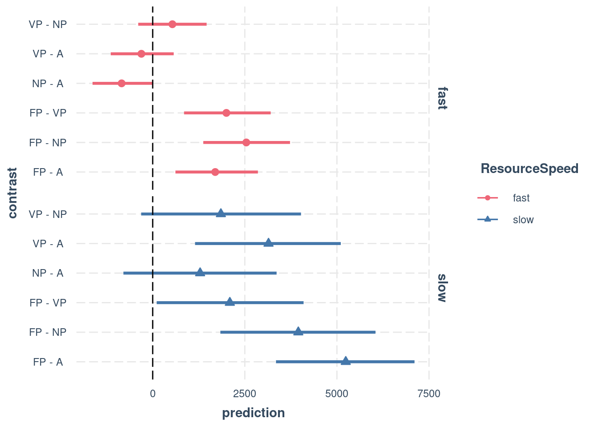
m.CollectedPoints.2.comparison.combined_table <- bind_rows(
m.CollectedPoints.2.comparison.1,
m.CollectedPoints.2.comparison.2
) %>%
select(ResourceSpeed, SignalingType, contrast, .value, .lower, .upper) %>%
mutate(
ResourceSpeed = ifelse(is.na(ResourceSpeed), ".", as.character(ResourceSpeed)),
SignalingType = ifelse(is.na(SignalingType), ".", as.character(SignalingType)),
sig = (.lower * .upper) > 0,
Estimate = sprintf("%.2f", .value),
Estimate = ifelse(sig, paste0("\\textbf{", Estimate, "}"), Estimate),
hpdi = sprintf("[%.2f, %.2f]", .lower, .upper),
hpdi = ifelse(sig, paste0("\\textbf{", hpdi, "}"), hpdi)
) %>%
select(ResourceSpeed, SignalingType, contrast, Estimate, hpdi)
colnames(m.CollectedPoints.2.comparison.combined_table) <- c(
"Resource Speed", "Payoff Condition", "Contrast", "Mean", "90\\% HPDI"
)
kbl <- kable(
m.CollectedPoints.2.comparison.combined_table,
format = "latex",
booktabs = TRUE,
align = c("l", "l", "l", "r", "r"),
caption = "Posterior Estimates Collected Points",
escape = FALSE
) %>%
kable_styling(latex_options = "hold_position") %>%
row_spec(0, bold = TRUE)
unique_speeds <- unique(m.CollectedPoints.2.comparison.combined_table$`Resource Speed`)
start <- 1
for (speed in unique_speeds) {
n_rows <- sum(m.CollectedPoints.2.comparison.combined_table$`Resource Speed` == speed)
if (speed != ".") {
kbl <- group_rows(kbl, speed, start, start + n_rows - 1)
}
start <- start + n_rows
}
writeLines(kbl, paste0(comparisons, "collected_points_2_comparison_combined.tex"))Variance condition comparisons
| .variable | .value | .lower | .upper | .width | .point | .interval |
|---|---|---|---|---|---|---|
| b_phi_Intercept | 2.68 | 2.26 | 3.09 | 0.9 | mean | hdci |
| b_phi_ResourceSpeedslow | -1.83 | -2.25 | -1.39 | 0.9 | mean | hdci |
| b_phi_ResourceSpeedslow:SignalingTypeFP | 0.06 | -0.52 | 0.63 | 0.9 | mean | hdci |
| b_phi_ResourceSpeedslow:SignalingTypeNP | 0.03 | -0.54 | 0.60 | 0.9 | mean | hdci |
| b_phi_ResourceSpeedslow:SignalingTypeVP | 1.35 | 0.79 | 1.91 | 0.9 | mean | hdci |
| b_phi_SignalingTypeFP | 1.47 | 0.99 | 1.96 | 0.9 | mean | hdci |
| b_phi_SignalingTypeNP | 1.16 | 0.67 | 1.65 | 0.9 | mean | hdci |
| b_phi_SignalingTypeVP | 1.16 | 0.69 | 1.64 | 0.9 | mean | hdci |
m.CollectedPoints.2.emmeans_contrast_draws.phi.1 <- m.CollectedPoints.2.fit %>%
emmeans(~ SignalingType * ResourceSpeed,
epred = TRUE,
re_formula = m.CollectedPoints.2.formula_comparison,
dpar = "phi",
type = "response"
) %>%
contrast(method = "revpairwise", simple = "each", combine = TRUE) %>%
gather_emmeans_draws()m.CollectedPoints.2.comparison.phi.1 <- m.CollectedPoints.2.emmeans_contrast_draws.phi.1 %>%
ggdist::mean_hdci(.width = 0.9) %>%
mutate(.value = round(.value, 2), .lower = round(.lower, 2), .upper = round(.upper, 2))
m.CollectedPoints.2.comparison.phi.1 %>%
knitr::kable("html", digits = 2) %>% kable_classic(full_width = T, position = "center", )| ResourceSpeed | SignalingType | contrast | .value | .lower | .upper | .width | .point | .interval |
|---|---|---|---|---|---|---|---|---|
| . | A | slow - fast | 0.33 | 0.28 | 0.38 | 0.9 | mean | hdci |
| . | FP | slow - fast | 0.47 | 0.40 | 0.53 | 0.9 | mean | hdci |
| . | NP | slow - fast | 0.41 | 0.35 | 0.48 | 0.9 | mean | hdci |
| . | VP | slow - fast | 0.46 | 0.40 | 0.52 | 0.9 | mean | hdci |
| fast | . | FP - A | 0.07 | 0.02 | 0.11 | 0.9 | mean | hdci |
| fast | . | FP - NP | 0.10 | 0.05 | 0.15 | 0.9 | mean | hdci |
| fast | . | FP - VP | 0.08 | 0.03 | 0.12 | 0.9 | mean | hdci |
| fast | . | NP - A | -0.03 | -0.06 | 0.00 | 0.9 | mean | hdci |
| fast | . | VP - A | -0.01 | -0.05 | 0.02 | 0.9 | mean | hdci |
| fast | . | VP - NP | 0.02 | -0.02 | 0.06 | 0.9 | mean | hdci |
| slow | . | FP - A | 0.20 | 0.13 | 0.28 | 0.9 | mean | hdci |
| slow | . | FP - NP | 0.15 | 0.07 | 0.24 | 0.9 | mean | hdci |
| slow | . | FP - VP | 0.08 | 0.00 | 0.16 | 0.9 | mean | hdci |
| slow | . | NP - A | 0.05 | -0.03 | 0.13 | 0.9 | mean | hdci |
| slow | . | VP - A | 0.12 | 0.04 | 0.20 | 0.9 | mean | hdci |
| slow | . | VP - NP | 0.07 | -0.01 | 0.16 | 0.9 | mean | hdci |
m.CollectedPoints.2.emmeans_contrast_draws.phi.2 <- m.CollectedPoints.2.fit %>%
emmeans(~ ResourceSpeed,
epred = TRUE,
re_formula = m.CollectedPoints.2.formula_comparison,
dpar = "phi",
type = "response"
) %>%
contrast(method = "revpairwise", simple = "each", combine = TRUE) %>%
gather_emmeans_draws()m.CollectedPoints.2.comparison.phi.2 <- m.CollectedPoints.2.emmeans_contrast_draws.phi.2 %>%
ggdist::mean_hdci(.width = 0.9) %>%
mutate(.value = round(.value, 2), .lower = round(.lower, 2), .upper = round(.upper, 2))
m.CollectedPoints.2.comparison.phi.2 %>%
knitr::kable("html", digits = 2) %>% kable_classic(full_width = T, position = "center", )| contrast | .value | .lower | .upper | .width | .point | .interval |
|---|---|---|---|---|---|---|
| slow - fast | 0.42 | 0.38 | 0.45 | 0.9 | mean | hdci |
m.CollectedPoints.2.comparison.combined_table.phi <- bind_rows(
m.CollectedPoints.2.comparison.phi.2,
m.CollectedPoints.2.comparison.phi.1
) %>%
select(ResourceSpeed, SignalingType, contrast, .value, .lower, .upper) %>%
mutate(
ResourceSpeed = ifelse(is.na(ResourceSpeed), ".", as.character(ResourceSpeed)),
SignalingType = ifelse(is.na(SignalingType), ".", as.character(SignalingType)),
sig = (.lower * .upper) > 0,
Estimate = sprintf("%.2f", .value),
Estimate = ifelse(sig, paste0("\\textbf{", Estimate, "}"), Estimate),
hpdi = sprintf("[%.2f, %.2f]", .lower, .upper),
hpdi = ifelse(sig, paste0("\\textbf{", hpdi, "}"), hpdi)
) %>%
select(ResourceSpeed, SignalingType, contrast, Estimate, hpdi)
colnames(m.CollectedPoints.2.comparison.combined_table.phi) <- c(
"Resource Speed", "Payoff Condition", "Contrast", "Mean", "90\\% HPDI"
)
kbl <- kable(
m.CollectedPoints.2.comparison.combined_table.phi,
format = "latex",
booktabs = TRUE,
align = c("l", "l", "l", "r", "r"),
caption = "Posterior Estimates Collected Points",
escape = FALSE
) %>%
kable_styling(latex_options = "hold_position") %>%
row_spec(0, bold = TRUE)
unique_speeds <- unique(m.CollectedPoints.2.comparison.combined_table.phi$`Resource Speed`)
start <- 1
for (speed in unique_speeds) {
n_rows <- sum(m.CollectedPoints.2.comparison.combined_table.phi$`Resource Speed` == speed)
if (speed != ".") {
kbl <- group_rows(kbl, speed, start, start + n_rows - 1)
}
start <- start + n_rows
}
writeLines(kbl, paste0(comparisons, "collected_points_2_comparison_combined_phi.tex"))Model Comparison
m.CollectedPoints.1.loo_model <- loo(m.CollectedPoints.1.fit, moment_match = F, reloo = F, draws = 1000)
m.CollectedPoints.2.loo_model <- loo(m.CollectedPoints.2.fit, moment_match = F, reloo = F, draws = 1000)##
## Computed from 70000 by 621 log-likelihood matrix.
##
## Estimate SE
## elpd_loo 455.4 18.7
## p_loo 147.3 11.7
## looic -910.7 37.3
## ------
## MCSE of elpd_loo is NA.
## MCSE and ESS estimates assume MCMC draws (r_eff in [0.4, 2.2]).
##
## Pareto k diagnostic values:
## Count Pct. Min. ESS
## (-Inf, 0.7] (good) 555 89.4% 529
## (0.7, 1] (bad) 63 10.1% <NA>
## (1, Inf) (very bad) 3 0.5% <NA>
## See help('pareto-k-diagnostic') for details.##
## Computed from 70000 by 621 log-likelihood matrix.
##
## Estimate SE
## elpd_loo 571.8 24.2
## p_loo 142.3 9.6
## looic -1143.7 48.3
## ------
## MCSE of elpd_loo is NA.
## MCSE and ESS estimates assume MCMC draws (r_eff in [0.3, 1.8]).
##
## Pareto k diagnostic values:
## Count Pct. Min. ESS
## (-Inf, 0.7] (good) 607 97.7% 437
## (0.7, 1] (bad) 13 2.1% <NA>
## (1, Inf) (very bad) 1 0.2% <NA>
## See help('pareto-k-diagnostic') for details.## elpd_diff se_diff elpd_loo se_elpd_loo p_loo se_p_loo looic se_looic
## m.CollectedPoints.2.fit 0.000 0.000 571.845 24.156 142.342 9.587 -1143.690 48.312
## m.CollectedPoints.1.fit -116.474 13.420 455.371 18.675 147.336 11.669 -910.742 37.349